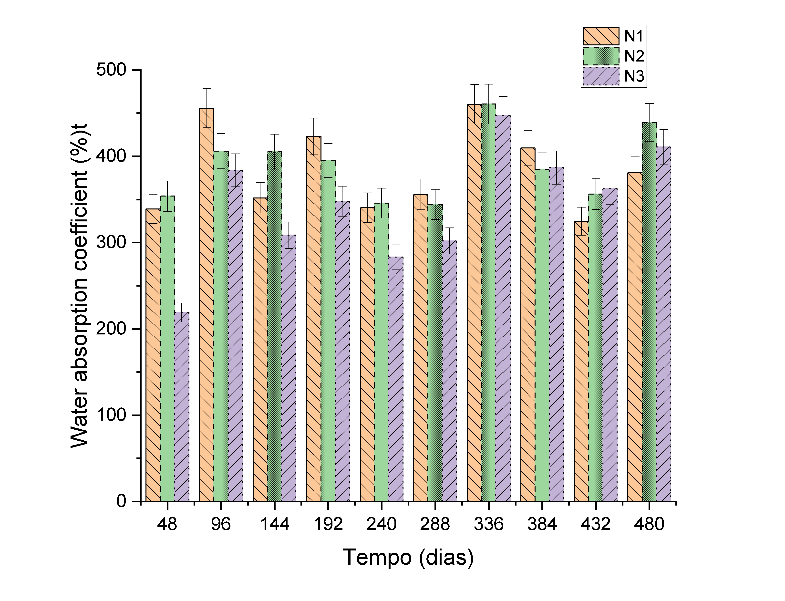
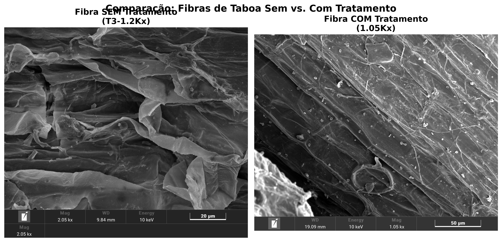
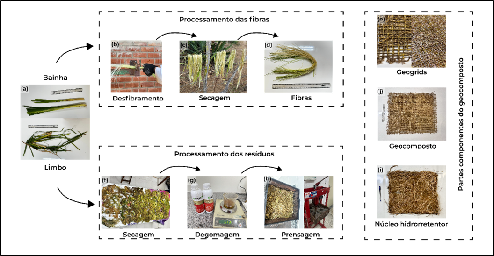
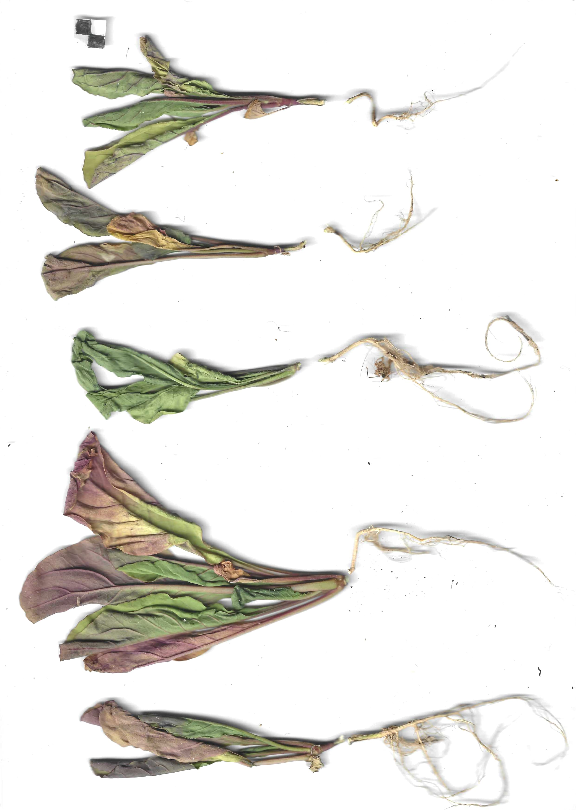

20 Conceito
21 Biopolímeros Superabsorventes
Os biopolímeros superabsorventes (Bio-SAP, do inglês Superabsorbent Biopolymer) são materiais de origem vegetal capazes de absorver e reter grandes volumes de água (100–500 vezes seu peso seco), liberando-a gradualmente para a zona radicular das plantas à medida que o potencial matricial do solo diminui por evapotranspiração. Diferentemente dos hidrogéis sintéticos (poliacrilatos de sódio), os Bio-SAPs são integralmente biodegradáveis e não geram resíduos de microplásticos no solo. Essa característica os torna especialmente relevantes para aplicações de bioengenharia de solos em regiões semiáridas, onde o déficit hídrico no período pós-plantio é o principal fator de mortalidade de mudas em taludes recuperados. A Figura 21.1 mostra o material vegetal de taboa (Typha domingensis) que constitui a matéria-prima do Bio-SAP, cuja polpa celulósica é processada quimicamente para adquirir propriedades superabsorventes.

21.1 Bio-SAP de Taboa
21.1.1 Desenvolvimento
O Bio-SAP de taboa (Typha domingensis) é uma inovação desenvolvida a partir da polpa celulósica da planta, processada por duas reações químicas sequenciais (carboximetilação e reticulação) que modificam a estrutura molecular da celulose, conferindo-lhe a capacidade de formar hidrogéis com elevada retenção hídrica. A celulose nativa possui grupos hidroxila (-OH) que atraem moléculas de água por ligações de hidrogênio, mas a capacidade de absorção é limitada. A carboximetilação substitui parte desses grupos hidroxila por grupos carboximetila (-CH₂COONa), que são aniônicos em solução aquosa e criam pressão osmótica no interior da rede polimérica, atraindo grandes volumes de água. A reticulação subsequente (com epicloridrina) cria ligações covalentes entre as cadeias de celulose, formando uma rede tridimensional que impede a dissolução do material e confere elasticidade mecânica.
21.1.2 Processo de Produção
O fluxograma abaixo sintetiza as etapas de produção do Bio-SAP, desde a colheita da taboa em campo até a obtenção do produto granulado pronto para aplicação.
21.1.3 Propriedades
A microestrutura do Bio-SAP pode ser observada na Figura 21.2, que apresenta imagens de microscopia eletrônica de varredura (MEV) comparando o material antes e após a absorção de água. No estado seco, o Bio-SAP exibe uma superfície rugosa e compacta com microporos colapsados; após a absorção, a estrutura se expande dramaticamente, revelando uma rede tridimensional de poros interconectados que retêm a água por capilaridade e pressão osmótica. A Tabela 21.1 quantifica as principais propriedades do material.

| Propriedade | Valor | Significado prático |
|---|---|---|
| Capacidade de absorção em água destilada | 300–500 g/g | 1 kg de Bio-SAP retém 300–500 L de água |
| Capacidade de absorção em solo | 150–250 g/g | Reduzida pela presença de sais e finos |
| Tempo de absorção (90%) | 15–30 min | Resposta rápida a eventos de chuva |
| Taxa de liberação (50%) | 12–48 h | Liberação gradual compatível com demanda radicular |
| Biodegradação completa | 6–18 meses | Não deixa resíduos no solo |
| Granulometria | 0,5–2,0 mm | Compatível com mistura em substrato |
21.2 Geocompostos Hidrorretentores Typha-Rami
21.2.1 Conceito dos Geocompostos Hidrorretentores
Os geocompostos hidrorretentores integram o Bio-SAP em uma estrutura sanduíche de biotêxtil (ver Capítulo 20), criando um sistema de retenção hídrica distribuída que pode ser instalado diretamente sobre o talude como uma manta, eliminando a necessidade de misturar manualmente o Bio-SAP ao solo. A Figura 21.3 mostra o processo de confecção do geocomposto, onde o núcleo de Bio-SAP é confinado entre duas camadas de biotêxtil de taboa-rami.

21.2.2 Estrutura
A Tabela 21.2 detalha os componentes da estrutura sanduíche, onde cada camada desempenha uma função específica e complementar.
| Camada | Material | Função |
|---|---|---|
| Exterior (×2) | Biotêxtil de taboa-rami | Proteção mecânica, filtração e reforço |
| Interior | Núcleo de Bio-SAP (300–800 g/m²) | Reservatório hídrico distribuído |
| Aglutinante | Aloe vera + amida 90% | Fixação do Bio-SAP e ativação da absorção |
21.2.3 Desempenho
O geocomposto hidrorretentor apresenta WHC (Water Holding Capacity) superior a 300% do peso seco, o que significa que cada m² de geocomposto (com gramatura total de ~1.500 g/m²) retém até 4,5 L de água, funcionando como um reservatório laminar distribuído sobre toda a superfície do talude. A retenção de macronutrientes (N, P, K) é superior a 60%, reduzindo a lixiviação de fertilizantes aplicados durante a revegetação. A integridade estrutural é mantida por pelo menos 180 dias em campo (período crítico de estabelecimento vegetal), e a curva de retenção hídrica do geocomposto pode ser ajustada pela equação de van Genuchten
\[ \theta(h) = \theta_r + \frac{\theta_s - \theta_r}{[1 + (\alpha \cdot h)^n]^m} \]
onde \(\theta_r\) e \(\theta_s\) são os teores de água residual e saturado (cm³/cm³), \(h\) é o potencial matricial (cm de coluna d’água), e \(\alpha\) (cm⁻¹), \(n\) e \(m = 1 - 1/n\) são parâmetros de ajuste que descrevem a forma da curva. A determinação desses parâmetros por ajuste a dados experimentais permite prever a disponibilidade de água para as plantas em função da tensão do solo, subsidiando o dimensionamento da gramatura de Bio-SAP necessária para cada condição climática.
21.3 Aplicações
A Figura 21.4 apresenta ensaios de alelopatia e germinação com Bio-SAP, demonstrando que o biopolímero não exerce efeito inibitório sobre a germinação e o desenvolvimento de plântulas, condição essencial para sua aplicação em projetos de revegetação.

Em projetos de recuperação de encostas, o Bio-SAP é instalado sob biomantas (ver Capítulo 13) ou incorporado à pasta de hidrossemeadura (ver Capítulo 12), retendo a água da chuva na zona radicular e reduzindo a necessidade de irrigação em 50–70% nos primeiros 90 dias, fator crítico em regiões semiáridas com déficit hídrico prolongado. Na revegetação de taludes em áreas de mineração, onde os substratos são altamente degradados (pH extremo, ausência de matéria orgânica, baixa capacidade de retenção hídrica), a combinação de Bio-SAP com composto orgânico cria condições mínimas para o estabelecimento vegetal ao fornecer um reservatório hídrico e nutricional que compensa as deficiências edáficas. Na produção de mudas em viveiros, a incorporação de Bio-SAP ao substrato reduz a frequência de irrigação em 40–60% e aumenta a taxa de sobrevivência no transplante para campo, reduzindo o estresse hídrico na fase de adaptação.
21.4 Vantagens sobre SAP Sintéticos
A Tabela 21.3 confronta o Bio-SAP de taboa com os SAPs sintéticos (poliacrilatos de sódio) que dominam o mercado atual, evidenciando que o Bio-SAP oferece capacidade de absorção comparável (300–500 g/g versus 300–600 g/g) com as vantagens decisivas de biodegradabilidade total, ausência de microplásticos, matéria-prima renovável e custo inferior.
| Critério | SAP sintético (poliacrilato) | Bio-SAP (taboa) |
|---|---|---|
| Absorção (g/g) | 300–600 | 300–500 |
| Biodegradação | Não | Sim (6–18 meses) |
| Microplásticos | Sim | Não |
| Matéria-prima | Petroquímica | Vegetal (renovável) |
| Custo | R$ 15–30/kg | R$ 8–20/kg |
| Toxicidade residual | Possível | Nenhuma |
ImportanteRelevância ambiental
SAPs sintéticos (poliacrilatos) são uma fonte crescente de microplásticos no solo, com fragmentação progressiva em partículas < 5 mm que contaminam cadeias tróficas e corpos hídricos. Sua substituição por Bio-SAPs vegetais elimina integralmente esse risco e alinha a prática de bioengenharia com os ODS 12 (Consumo responsável) e 15 (Vida terrestre).
21.5 Fronteiras Tecnológicas em Biopolímeros
21.5.1 Nanocelulose para Estabilização de Solos
A nanocelulose, obtida pela desagregação mecânica e/ou enzimática de fibras celulósicas em nanopartículas com diâmetro de 5–50 nm e comprimento de 100–2.000 nm, representa uma fronteira promissora na estabilização de solos tropicais. Diferentemente do Bio-SAP (que retém água por pressão osmótica), a nanocelulose atua como agente cimentante biológico, formando uma rede nanofibrilar nos poros do solo que aumenta a coesão efetiva sem reduzir significativamente a permeabilidade. Ensaios laboratoriais demonstram que a adição de 0,5–2,0% de nanocelulose (em massa seca) a solos siltosos e arenosos incrementa a coesão não drenada em 15–40 kPa e reduz a erodibilidade (fator \(K\) da RUSLE) em 30–60%, efeitos que persistem por 6–18 meses até a biodegradação completa das nanofibras.
A produção de nanocelulose a partir de resíduos agroindustriais tropicais (bagaço de cana, casca de coco, pseudocaule de bananeira, polpa de taboa) alinha essa tecnologia com os princípios de economia circular e viabiliza a produção descentralizada em regiões rurais. O custo de produção, atualmente elevado para processos industriais (R$ 200–500/kg em escala laboratorial), tende a diminuir com a escalabilidade dos processos e a utilização de resíduos de custo zero como matéria-prima.
As aplicações potenciais em bioengenharia incluem a formulação de pastas de hidrossemeadura reforçadas com nanocelulose (que confere à pasta maior aderência ao talude e resistência à lavagem pela chuva, reduzindo as perdas de sementes e fertilizantes em 40–60%), a estabilização temporária de superfícies escavadas durante a construção de estruturas de contenção, e a melhoria da interface solo-geotêxtil por impregnação de biomantas com suspensões de nanocelulose.
21.5.2 Sistemas Biopoliméricos de Quitosana-Alginato
A combinação de quitosana (biopolímero catiônico derivado da quitina de camarões e caranguejos) com alginato de sódio (biopolímero aniônico extraído de algas pardas) forma um complexo polieletrolítico (PEC) por interação eletrostática que apresenta propriedades excepcionais para aplicações em bioengenharia de solos. O PEC quitosana-alginato forma hidrogéis com capacidade de absorção de 80–200 g/g de água, com a vantagem de liberar nutrientes quelados (ferro, zinco, manganês) de forma controlada à medida que o hidrogel se degrada (12–24 meses), funcionando simultaneamente como reservatório hídrico e sistema de fertilização de liberação lenta.
A quitosana confere ao sistema propriedades antimicrobianas (inibição de fungos fitopatogênicos do solo como Fusarium spp. e Pythium spp.) e de coagulação de partículas finas em suspensão (a carga catiônica atrai e flocula argilas dispersas), reduzindo a turbidez do escoamento em 60–80%. O alginato, por sua vez, atua como agente gelificante na presença de cátions divalentes (Ca²⁺, Mg²⁺), formando uma matriz estrutural que encapsula sementes e nutrientes, protegendo-os contra a lixiviação imediata após a aplicação.
A dosagem recomendada para incorporação ao substrato de revegetação é de 2–5 g/L de solução, aplicada por irrigação ou incorporada à pasta de hidrossemeadura. Em ensaios de campo, a combinação de quitosana-alginato com composto orgânico e Bio-SAP de taboa aumentou a taxa de sobrevivência de mudas em 20–35% em comparação com o substrato convencional, resultado atribuído à sinergia entre retenção hídrica (Bio-SAP), fertilização de liberação lenta (alginato) e proteção fitossanitária (quitosana).
NotaPerspectiva
A integração de biopolímeros multicomponentes (nanocelulose + Bio-SAP + quitosana-alginato) em geocompostos de próxima geração representa uma convergência entre biotecnologia, ciência dos materiais e engenharia geotécnica, com potencial para transformar a eficiência das intervenções de bioengenharia em condições tropicais adversas (solos ácidos, déficit hídrico, baixa fertilidade). Os próximos avanços devem priorizar a redução de custos de produção, a padronização de protocolos de dosagem e a validação em campo por monitoramento de longo prazo (> 5 anos).